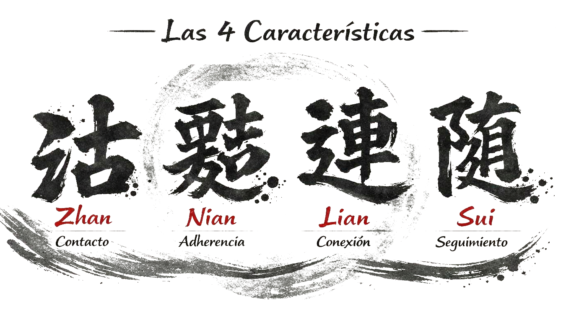

Las cuatro características
Constituyen la base imprescindible sobre la que debe asentarse un trabajo correcto de Tui Shou.
Conocerlas y respetarlas es esencial. De lo contrario, aunque se pueda llegar a desplazar al compañero con cierta habilidad, no se estarán desarrollando las capacidades propias del Tai Ji Quan ni los principios que lo distinguen de otros métodos de empuje o lucha.
Estas cuatro características están profundamente vinculadas al conocido lema del Tai Ji Quan: “invertir en pérdidas”. Respetarlas implica aceptar un marco de juego claro, unas reglas que nos obligan a mantenernos dentro de un contexto técnico que favorece la aplicación real de los principios biomecánicos y energéticos que estudiamos en las formas.
Cuando estas características se mantienen, el Tui Shou se convierte en un movimiento continuo, circular y plenamente conectado, donde participa el cuerpo entero como una unidad funcional.
Un Tui Shou correcto, que conserva las cuatro características, debería percibirse como un sistema de engranajes y poleas: un mecanismo en el que cada parte se mueve en armonía, generando una circularidad constante y sin interrupciones.
Por el contrario, cuando estos principios no se respetan, aparecen señales claras de ruptura: cambios bruscos de velocidad, rigidez, pérdida de adherencia, desconexión entre las partes del cuerpo (movimientos aislados de brazos o piernas) o posturas que contradicen los principios estructurales aprendidos en la práctica de las formas.